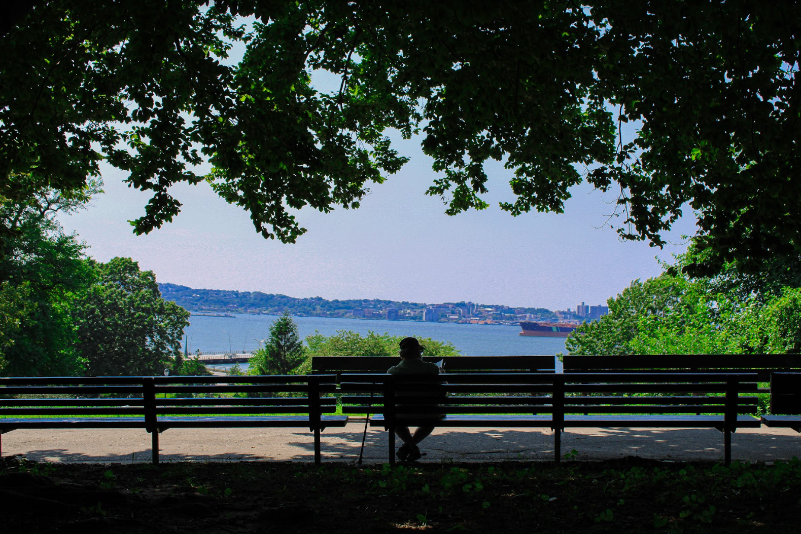

My name is Juan Vela. I am born and raised in Brooklyn, New york. I really enjoy taking photographs of random things but mostly to do with nature. This is also my first year at city tech, my major is Emerging Media. This is my first ever year learning coding and it has been a fun experience learning something I have had no clue about but wanted to always explore more into it.
This photograph above is one I have Taken myself